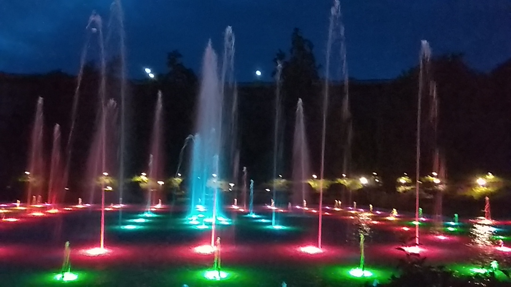
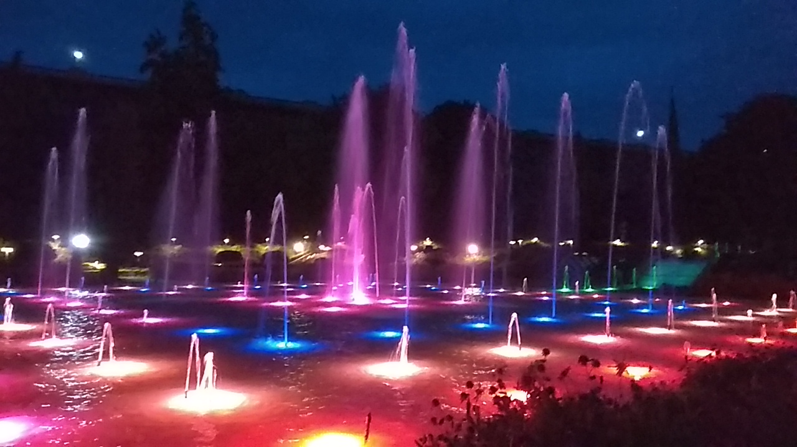
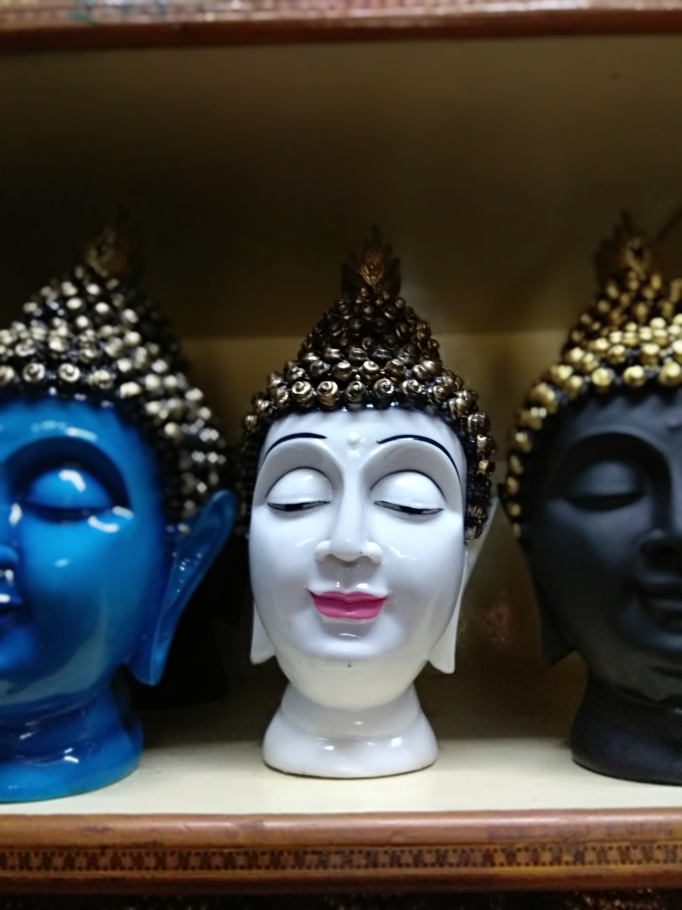
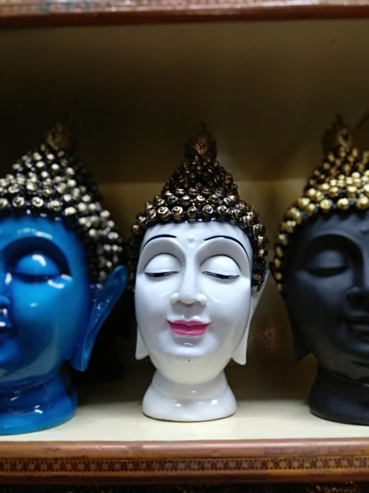

Brindavan Gardens
 The Brindavan Gardens is a garden located in Mysore, Karnataka. The garden is one of the major attractions of Mysore and is visited by millions of people every year. The main attraction of the park is the musical fountain in which bursts of water are synchronised to music. There is also a lake within the garden with boating facilities available for visitors.
I visited it in the evening. On the way, there is a lot of shops and you can get whatever you want from bags, toys, balloons to eatables like corn, icecream, bhel puri, etc. You have to pay an entry fee to get inside. Once you get inside, you can roam around through many different paths and see how the garden is lit with lights. The view is mesmerizing.
The water show is something worth seeing. You can either walk all the way to the musical fountain or take a boat from the lake (it costs extra). In my opinion, you should not leave the place without watching the water show. The water in the musical fountain bursts as per the music and is so good to see it with all the colors changing too. The show lasts for a duration of 5-10 mins and the next show begins after 10 mins. The show ends with the National Anthem of India. This whole thing is patriotic. After this, you can roam around the garden, see different plants, flowers, topiary works, etc. You could try some of the local food too.
Namdroling Monastery Golden Temple

 
The Namdroling Nyingmapa Monastery is located in Bylakuppe, part of the Mysuru district of the Indian State Karnataka. It is the largest teaching center of the Nyingma lineage of Tibetan Buddhism in the world.
I have been here in the day. The whole place is very peaceful and you could see a lot of lamas (both monks and nuns) here. Around 5000 lamas live here. An attraction is the oversize Thankga hanging from the sides of the buildings here. You could see plenty of them while reaching the Monastery. Many ceremonies are hosted here yearly, based on the Lunar Calendar, usually in the months of February or March. Since I visited the Monastery not during this time of the year, I couldn't see it. Make it a point to visit in February or March. Hopefully, you could see the traditional Lama Dance as well. Still, I got to see a prayer being held in one of the temples and that was a nice experience.
Just like all tourist destinations, you have got a lot of place to do shopping. You could get some coffee, snacks and ice-creams as well. The picture shows the idol of Lord Buddha. Dream catchers, small toys, fridge magnets etc can be found in most of the stores as well!